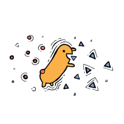
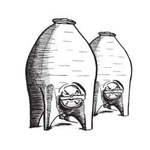
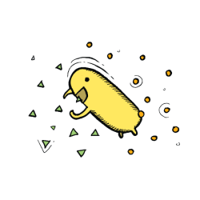

Wine Making Process
Not much has changed in the wine making process since we started making wine 8000 years ago. There are some differences between red winemaking and white winemaking, with the primary difference being that red winemaking involves the fermentation of grapes with skin to dye it red, while white winemaking involves the fermentation of grapes without skin. Here are the winemaking steps for both red wines and white wines in more detail.
Red wine is made with black (also known as purple) wine grapes. The anthocyanin (red pigment) found in the black grape skins gives the red wine its signature colour. The grapes have to be harvested at perfect ripeness in order for the grapes to be of the best quality, as grapes do not continue to ripen after they have been picked.
Grapes that are picked too early may result in tart and thin-tasting wines, while grapes that are picked too late may result in wines that taste overly ripe and flabby. This just goes to show how important the grape harvest season is for winemakers, as it can make or break the harvest for that year.
The harvested grapes are brought to the winery, where the winemaker decides whether to remove the stems or to ferment grape bunches as whole clusters. This is a very important choice as leaving stems in the fermentation process adds astringency but also reduces sourness.
During this step, grapes also receive sulfur dioxide to stop bacterial spoilage before the fermentation starts.
When yeast is added to the grapes, the grape sugars will be consumed, and alcohol, carbon dioxide, and heat will be produced. The type of yeast chosen will affect the taste of the wines produced. Commerical yeasts result in very consistent wines every year and are easy to manage, while natural yeasts result in more complex aromatics but are more challenging to use well.
Red wines ferment for an average of 5 to 21 days at 20 to 30 degrees Celsius and often get left to macerate on the grape skins for 7 to 28 days after the fermentation completes.
The fermenting juice is frequently stirred to ensure that the skins are submerged, as they will gradually float to the surface over time. One way to achieve this is to pump wine over the top to push the skins down. This method rigourously extracts a large amount of flavour from the grape skins and results in rich red wines. Another way is to punch down the layer of floating skins. This method extracts flavours more delicately and results in more subtle red wines.
The freely running wine is drained, after which the remaining skins are placed into a wine press and pressed. This extracts about 15% more wine from the skins.

Malolactic Fermentation
As the red wine settles in tanks or barrels, the wine undergoes a second fermentation, which converts sharp tasting malic acid into creamier, choclatey lactic acid.
Red wine ages in barrels or tanks for several months to several years. The vessel or container that the red wine is aged in will affect the taste of the wine differently. For example, oak barrels flavour the wine with aromatic compounds like vanillin and slightly oxidise the wine, enhancing its flavour. Unlined concrete and clay tanks reduce the acidity of the wine, softening its taste and flavour.
The duration of the aging phase also greatly affects the taste of the wine. The longer the wine rests, the more chemical reactions happen within the vessel, which may result in a smoother and more nutty flavour.
The winemaker blends wines from different grape varities or different barrels of the same grape together to create the final wine. This can pose a challenge for the winemaker, as they have to rely on their sense of texture on the palate instead of their nose, due to the fact that the aromas have not finished evolving.
Clarifying or fining agents (such as egg whites or vegan bentonite clay) are added to the wine to remove suspended proteins, which make the wine cloudy.
The wine is then passed through a filter for sanitation to reduce the likelihood of bacterial spoilage.
However, there are some winemakers that do not fine or filter their wine as they feel that it removes texture and quality.
This phase has to occur with the wine being exposed to as little oxygen as possible, as exposure may result in the wine oxidising, spoiling its taste. Sulfur dioxide is also usually added to help preserve the wine.
Some wines are kept after bottling so that they can continue to age for years after bottling.
Both red or white wine grapes can be used to make white wine, as the grape skins are not used during fermentation. However, winemakers usually use green and yellow-coloured grapes to make white wine.
Winemakers also consider the ripeness of the grapes as well as the temperature of the environment when deciding when to harvest the grapes. Picking grapes in the morning or at night ensures that the grapes produce fresher-tasting white wines. Grapes for white wines are also usually picked earlier in the grape harvest season than red wines.
Harvested grapes are immediately sent to the winery, where they are pressed. The press squeezes the juice from the grapes which are collect into a tank. Sulfur dioxide is also added to help prevent bacterial spoilage before the fermentation starts.
The freshly squeezed juice is allowed to sit in the tank for a while so that any suspended grape solids will gradually settle at the bottom. These solids are then removed as they typically add bitterness to the texture and flavour.
When yeast is added to the grapes, the grape sugars will be consumed, and alcohol, carbon dioxide, and heat will be produced. The type of yeast chosen will affect the taste of the wines produced. Commerical yeasts result in very consistent wines every year and are easy to manage, while natural yeasts result in more complex aromatics but are more challenging to use well.

Alcoholic Fermentation
White wines ferment for about 14 days at 14 to 21 degrees Celsius. The fermentation temperature of white wines are lower than that of red wines in order to preserve the delicate floral and fruit aromas of the white wine.
White wines are also rarely placed in an open fermentation tank in order to minimise oxygen exposurem, which can add richer spice flavours and burn off the delicate aromas in white wine.
The winemaker can also control the sugar levels in the white wine by adjusting the temperature of the fermentation. Super chilling the tank stops the yeast from consuming the sugars, leaving behind more residual sugar, which results in a sweeter white wine.

Malolactic Fermentation
Depending on the wine, the winemaker may allow malolactic bacteria to convert sharp tasting malic acid into creamier, choclatey lactic acid. This lowers acidity, reduces fruitiness, and adds creamy buttery flavours to white wines.
After fermentation has completed, the wine will age in tanks or barrels for up to a year. While the wine ages, the winemakers will stir the wine, causing the yeast particles to float up into the wine. These particles add flavour to the wine and give it a more creamy texture.
Although it is common to only use a single grape variety or wine from 1 tank to produce the white wine, the winemaker can still go through a barrel selection process to create the blend. As with red winemaking, this can pose a challenge for the winemaker, as they have to rely on their sense of texture on the palate instead of their nose, due to the fact that the aromas have not finished evolving.
Clarifying or fining agents (such as egg whites or vegan bentonite clay) are added to the wine to remove suspended proteins, which make the wine cloudy.
The wine is then passed through a filter for sanitation to reduce the likelihood of bacterial spoilage.
A few rare white wines (such as orange wine) do not receive fining and filtering. The winemaker simply waits for the wine to become clear with time.
This phase has to occur with the wine being exposed to as little oxygen as possible, as exposure may result in the wine oxidising, spoiling its taste. Sulfur dioxide is also usually added to help preserve the wine.